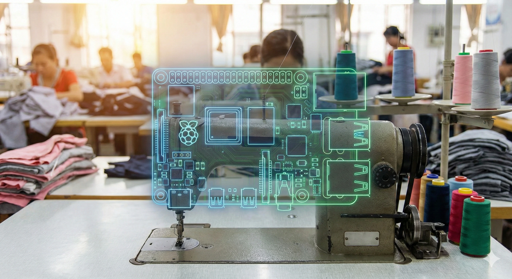
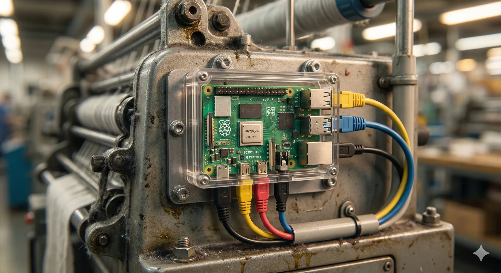

Edge-Native
Intelligence
Three drop-in AI modules. Zero cloud dependency.
$150 Hardware BOM*. 47-day ROI.
*BOM (Bill of Materials): The total cost of the raw components required to build the system.

Backbone: MicroViT-Tiny-Q8 (28ms)
Decoder: PicoSAM-2 (Promptable)
Output: Binary Mask + Export Class
Hardware: RPi 5 / Android (Snapdragon)
QC Vision
The Leakage: Manual QC misses 3-5% of defects, costing the industry $390M/yr. Cloud solutions fail due to latency (>3s) and bandwidth costs.
The Fix: A quantization-first approach*. We run 8-bit Vision Transformers locally. The model "snaps" to defects like oil stains in <90ms.
*Quantization: Compressing an AI model to make it run faster on cheap hardware without losing significant accuracy.

Algorithm: TS2Vec + MOMEMTO Gate
Prediction: 4-Layer TCN Forecaster
Compliance: EU CBAM / DPP Parquet Log
Drift: Auto-calibration every 7 days
PowerGuard
The Leakage: Energy is 15% of production cost. Grid instability forces reliance on expensive diesel ($0.32/kWh).
The Fix: We treat power as a high-frequency time series. The system predicts spikes 180 seconds in advance, allowing for automated "Peak Shaving"* of non-critical loads.
*Peak Shaving: Reducing power usage during expensive peak-tariff hours to avoid penalties.

Model: GRU-128 (NASA CMAPSS)
Enhancement: Pi-Transformer Head
Output: RUL (Remaining Useful Life)
Alerts: Traffic Light (Green/Yellow/Red)
FailPredict
The Leakage: Unplanned downtime costs $2.04B annually. Parts are replaced too early (waste) or too late (catastrophe).
The Fix: Condition-based maintenance. By analyzing vibration harmonics (FFT*), we predict bearing and motor failure 5 hours in advance.
*FFT (Fast Fourier Transform): A mathematical method to break down a vibration signal into its component frequencies to find faults.
The Brain

The Edge Node
This is a Raspberry Pi 5. It costs $90 USD. It contains a quad-core 2.4GHz processor capable of running our 8-bit quantized AI models locally.
By moving the "Brain" to the machine edge, we eliminate the need for expensive servers and guarantee data privacy—images are processed in RAM and never leave the factory floor.